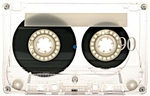

Music

My connection to music has always been strong. Although I prefer rock, I listen to a diverse set of genres. I play the guitar and I believe there is a lot to be learned from music and artists. Some of these lessons can even be of use to science. Music is a mind opener, broadening dreams, creating motivations and uncovering different perspectives of the world. Below are some of my favorite music albums, but if you're interested in statistics just check my Last.fm account.
Gaming
I would say that gaming is almost the natural hobby for an informatics guy. I'm no exception, I love games. Even though I don't dedicate much to them, I still find some time to play World of Warcraft or League of Legends, in the PC, and during the weekend I usually take the dust off of my Wii console, with some Donkey Kong Country Returns or Monster Hunter Tri.
TV Shows
Most of my free time is dedicated to watching TV. Nothing like a good show to relax, right? Here's some of the stuff I watch, even though some of the best shows, like Game of Thrones, are still missing.